Illustration style
Abstract geometry, not literal drawing. A circle can mean a world, a customer, a product. A line, a journey. A dot, a moment of attention.
Minimal line-work. Thin, uniform stroke. Navy on light, offwhite on dark. No fills, no gradients, no shadows.
Primitives only. Circles, arcs, lines, curves, arrows, dots. Combine them to carry meaning.
Conceptual, not illustrative. A cookie isn't a cookie drawing · it's a circle holding six dots. API isn't a server · it's a node fanning out.
1 to 3 blue accents · no more. One blue dot is the default focal. Use two or three only when the concept genuinely needs them (paired states, a small set of waypoints). Beyond three, the accent stops accenting.
Centered composition. Generous whitespace around the form. One primary shape, supporting dots.
No type inside artwork. Meaning comes from the geometry and the caption beside it.
Tokens
Stroke
1.25 px · uniform · round caps
Navy dot
#04092D · 5–10 px
Accent dot
#465CEE · focal · one per piece
Hollow node
Outline · endpoints / waypoints
Construction · how to draw one
01State the concept in one word. "Convergence", "routing", "orbit", "signal", "distribution".
02Pick the carrier form. Circle = entity or scope. Line/arc = journey or relation. Arrow = direction. Dot = moment or actor.
03Repeat with rhythm. Multiple arcs, multiple dots, a phase offset. The repetition is the message.
04Place 1–3 blue dots. Default to one · the focal node. Add a second or third only when the concept needs paired or sequenced beats. Never more than three.
05Breathe. ~20% margin on all sides. Centered. No clutter.
Examples · existing illustrations
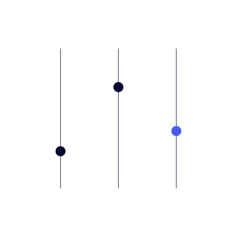
Customization
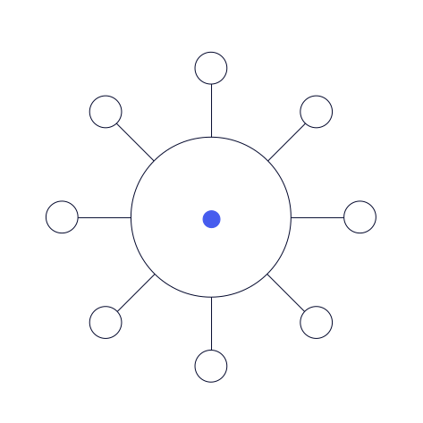
Integrations
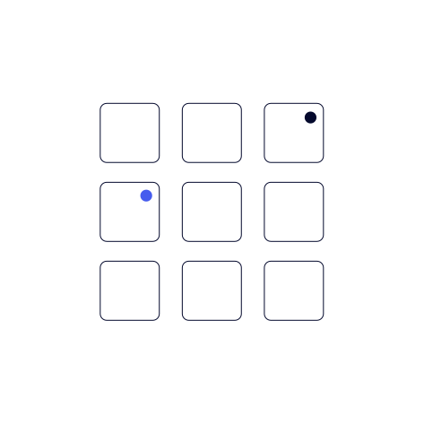
Calendar

User guiding
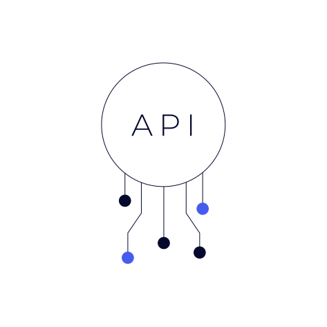
API
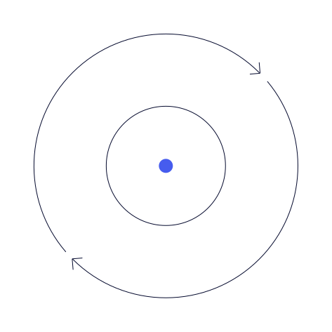
Automation
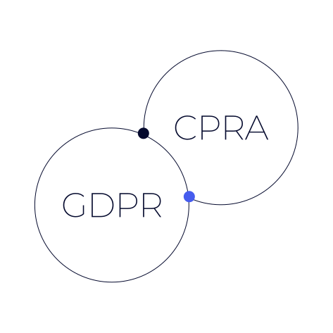
Legislations
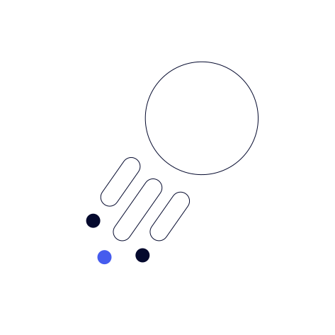
Launch

User preferences
Reference set · built from the rules above. Use as the visual benchmark when commissioning or producing new illustrations.
Do · don't
DO
Primitives, hairline stroke, one blue dot as focal. (1–3 max.)
DON'T
No filled shapes, gradients, or heavy masses.
DON'T
No heavy strokes. Keep line thin and uniform.
DON'T
More than 3 blue accents. Cap at 3 · blue earns attention by being rare.
On dark backgrounds
Customization
Integrations
Calendar

User guiding
API
Automation
Legislations
Launch

User preferences
Invert: navy strokes and navy dots flip to #F4F3F3. The electric blue accent stays #465CEE on both surfaces.